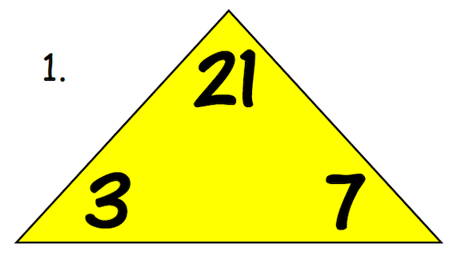
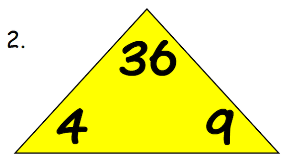
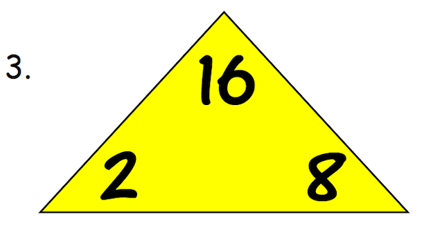
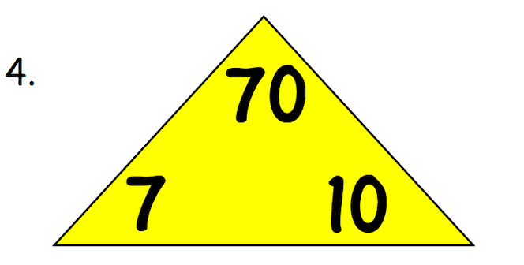
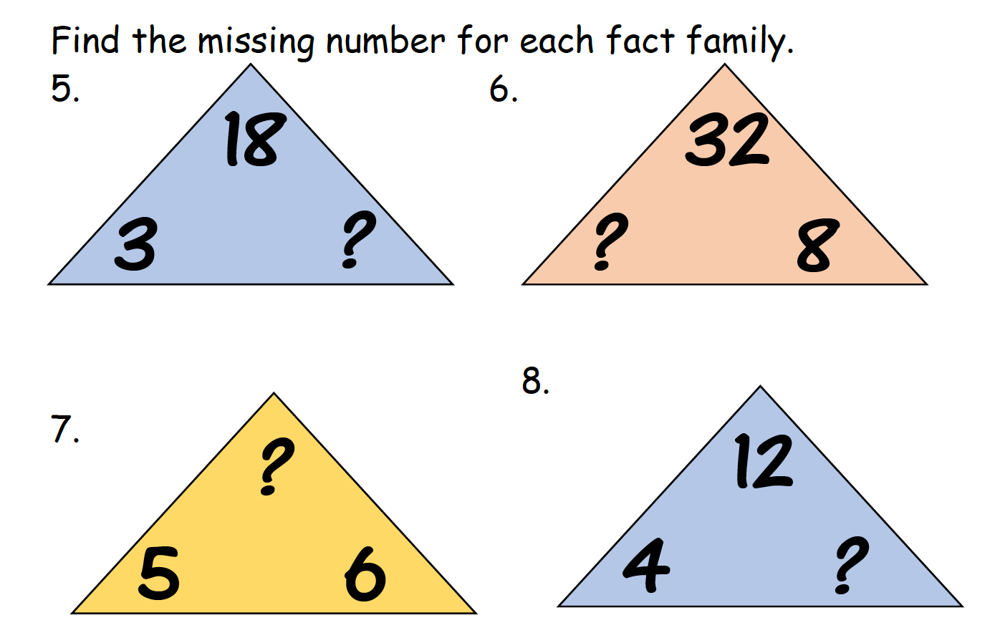

In this section, we will be working with rates and ratios.
The context in which we will be working with them will result in
us calculating a numerical answer (an answer that is a number).
A ratio is just a fancy word for "fraction". So don't let the word "ratio" scare you off;
even though I, myself, found it a difficult word to memorize for some reason when I was
first learning about ratios; just like you are today.
People use rates and ratios everday, even though they probably don't
even realize the amount of math that they do in their head on a daily basis.
That is typically why rates and ratios in math are easy concepts for people to
learn;you already pretty much know all about the concept. All you have to do
is learn how we write the situations mathematically. That way we can investigate
different rates and ratios related to changing situations and conditions.
Rates and ratios have become an extremely integrated part of our lives. Could
you imagine not having Google Maps? Rates and ratios are foundation calculations used in creating maps, GPS,
measuring distances, travel times, speed of travel, and much more.
Here are some everyday examples of Rates:
Below are images of a concept called a "Math-Fact Triangle".
It is used to help younger students practice their multiplication
and division facts and helps students to successfully make connections
between the relationship of the two operations to eachother.
I have chosen very easy numbers, not to challenge you on multiplication facts, but rather what I need you to focus on is HOW the 3 numbers and their physical locations in the triangle (top, bottom-left corner, and bottom-right corner) are related. There are 2 rules.
Spend the time examining the 4 examples below until you discover the pattern between the numbers at the 3 specific locations inside the triangle.
   
What if one of the numbers in the Math Triangle is missing?

Below is a short review of working with fractions by comparing their values
and by converting fractions into decimals.
Values in the "Distance, Rate, and Time" Math Triangle have units of: